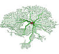

|  | ANN-Spec v1.0 |
|
ANN-Spec was developed for finding un-gapped patterns in un-aligned
DNA sequences. The program is primarily intended for finding
transcription factor binding sites in promoter regions though
it can be applied to protein sequences for the detection of
conserved motifs as well. ANN-Spec uses a neural network to spot regions of a given size (patterns) whose appearance in a set of sequences (the positive set) departs from its statistical expectance as determined analytically or after training with a background set (the negative set). |
|
|
For publication of results, please cite: Workman, C. and Stormo, G.D. (2000) ANN-Spec: A method for discovering transcription factor binding sites with improved specificity. Proc. Pacific Symposium on Biocomputing 2000. Heumann,J.M., Lapedes,A.S. and Stormo,G.D., Neural networks for determining protein specificity and multiple alignment of binding sites. Proccedings for the Intelligent Systems for Molecular Biology (ISMB), 1994;2:188-194. PMID: 7584389; UI: 96039019. |